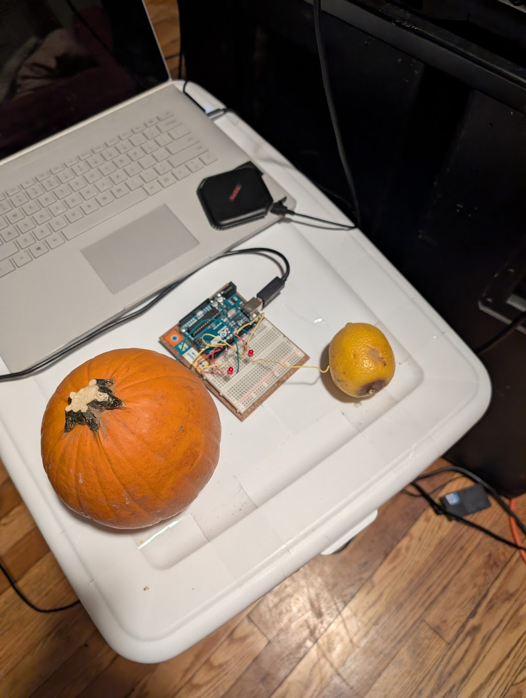

project 2 blog post
Background
The goal of project 2 was to create some sort of an interactive interface with a software application.The second this project was introduced I wanted to do something that was completely out of the ordinary- or just plain unconventional! While thinking of control surfaces, I was deeply into learning various lighting consoles and their interfaces. So the first thing that came to my mind was trying to have a very unconventional lighting control system.
The first thing that came to mind was using capacitive touch points to send commands to a computer and change buttons or toggles. Or even a slider to control intensity.
Protocols...
Very quickly, I found myself deep in a hole of protocols and trying to pick one. MIDI, OSC, DMX, there were so many to pick from it was overwhelming. I ended up settling on trying to replicate an HID keyboard- as it would work with many different sources and ultimately be a complete control surface for an infinite number of applications, as opposed to the three or four lighting control softwares that aren’t locked behind some absurd paywall. While I surely could have used a converter to convert MIDI messages into alternate inputs, but this was more of a standalone option that wouldn’t need alternate software or drivers to work.I scoured the internet for references on how to use the Arduino UNO for emulating keyboard input and to my convenience, it inherently doesn’t work :D
The solution: keep looking.
References
There were a few tutorials that were incredibly outdated and referenced using an UNO as a HID keyboard. There were later 32 bit versions of the UNO that have that supporter inherently, as with the keyboard libraryMy Saviour
However, none would work on my version of the UNO. Until I stumbled upon this!This tutorial outlined almost everything that I needed to emulate a keyboard with an arduino, and described the HID buffer and key tables very well! Additionally, it highlighted an extra step of reflashing the firmware on the UNO to a version that would emulate a keyboard on devices. With this extra knowledge, I felt like I was able to combine the capacitive sensor code with the keyboard inputs to create a working and scaleable controller.
Coming Together
It truly all came together at once. After testing all the individual pieces, the whole controller started to form. There was just one issue: what would I interact with?Code
Parts
- Pumpkin
- Arduino Uno
- Lime
- LEDs
- 10K Resistor
- 220ohm Resistor
Circuit Diagram
Pumpkin
I had planned on using baby carrots as touch point, but after seeing how many digital inputs each channel would take up (4), I wanted to revisit that idea with something a little more, visually appealing. Two small baby carrots would do no convincing that it was a good controller. Thus, I settled on a pumpkin that was still on a windowsill from October, and to spice things up more I had a lime as the second touch point.  The Whole System!Test System Outline.
Touch point -> Arduino UNO -> HID Keystroke -> Resolume Arena Control Layer (strobe and feedback layers) With Interaction
With Interaction